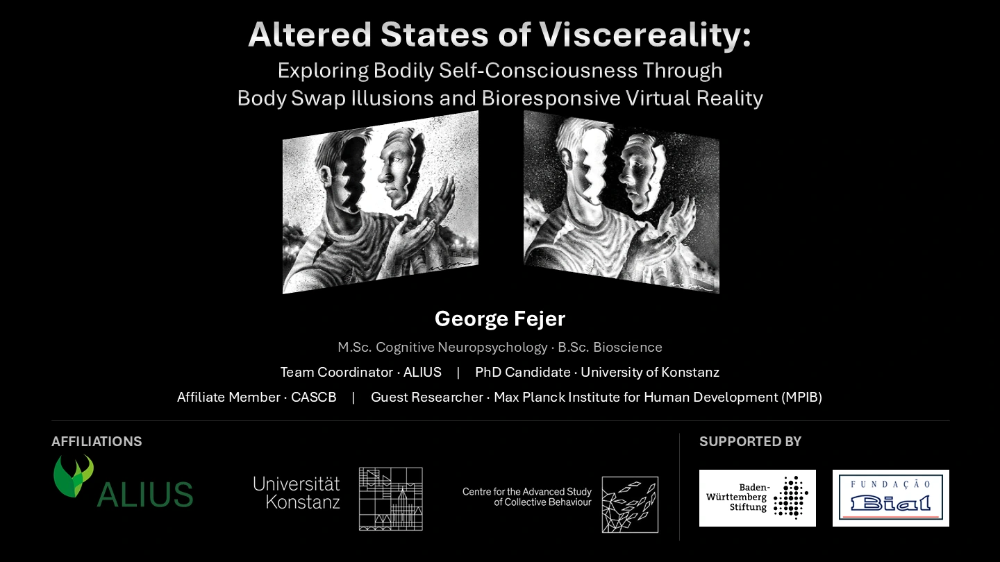

Humboldt University of Berlin / Bernstein Center for Computational Neuroscience

Loading slides…
Scan the QR code with your phone camera or copy the private pairing link.
Beacon
Use Next, Space, or the right arrow to advance one cue. Press F for full screen. Use the controls on an embedded video to play, pause, or seek it.
Download PowerPoint · Watch the earlier desktop recording
The interactive player needs JavaScript. The desktop recording and PowerPoint are linked above.